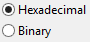
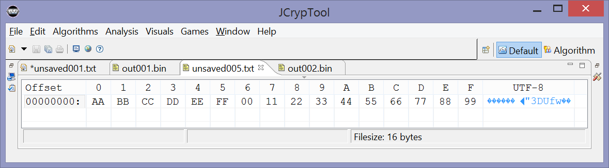

This help page explains how to use the dialog for the ARC4 cipher in the ARC4 crypto plug-in. For general information see the help for the ARC4 visualization plug-in.
ARC4 is a stream cipher that means that the encryption and the decryption process do the same. It's always an XOR between plaintext or encrypted text on the one hand and the random number sequence on the other hand.
| There are many different implementations of ARC4, we have implemented two: Spritz and ARC4. At the implementation of Spritz you can choose a variable called w. For more information see the help for the ARC4 visualization plug-in. |
| You have the possibility to choose between hex and binary representation. If you start writing your key in hex and then select to Binary the already written characters will be transformed to binary (it also works the other way round). |
 |
| For giving the algorithm a short try, you can use the random or the 0-bitkey generator. Attention: If you plan to decrypt your message again and you chose random generator you should copy your key beforehand. | |
| The "Finish" button only becomes active when you have entered a complete byte (which is an even number of hex characters). Nibbles aren't accepted. Remark: Here, the keylength restrictions of the algorithm are active (length: 5 - 256 byte). | |
This example uses the same data as the example at the end of the online help for the ARC4 visualization plug-in.
Plaintext: AA BB CC DD EE FF 00 11 22 33 44 55 66 77 88 99

Key: 00 11 22 33 44 55 66 77 88 99 AA BB CC DD EE FF

Output: Calculated ciphertext: 2F E0 60 8A 7C D8 61 94 DA 6A FD 6E F3 32 F5 0D

Remark: The operations Decrypt and Encrypt both create the same result.